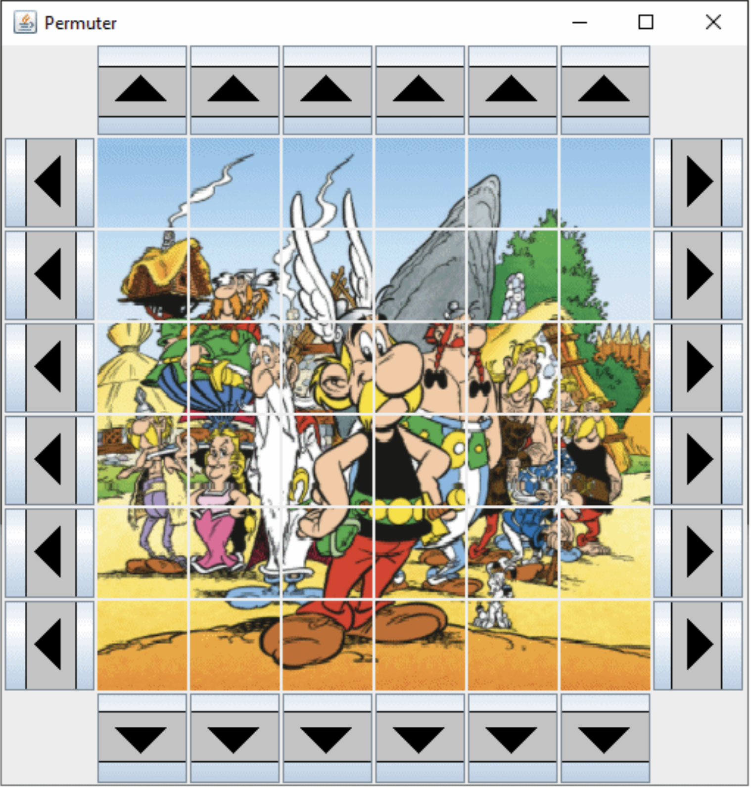

Appréhender l’écosystème numérique
- Utilisation de la suite Google
- Utilisation de Canva
- Utilisation de Trello
Découvrir les aptitudes requises selon les différents secteurs informatiques
Les différentes aptitudes
Identifier les statuts, les fonctions et les rôles de chaque membre d’une équipe pluridisciplinaire
Rôle d'un individu dans une équipe
Fonction d'un individu dans une équipe
Acquérir les compétences interpersonnelles pour travailler en équipe

Permuter